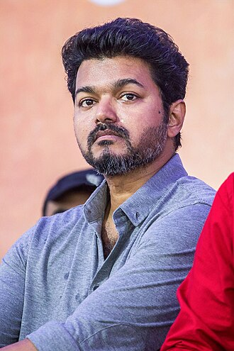

Vijay (actor)

Joseph Vijay Chandrasekhar
(born 22 June 1974[2][3]), known
professionally as Vijay, is an Indian actor and singer who works
predominantly in Tamil cinema.[4][5] He is among the highest paid
actors in India[6][7] and has featured in Forbes India's Celebrity
100 list on seven occasions.[8][9] He has played the lead in 66
films and the International Business Times framed him as
a "consistent performer".[10] Referred to as Thalapathy (transl. Commander)
, Vijay has a significant following
internationally.[11][6] He has won several awards, including an
Osaka Best Actor Award and a South Indian International Movie
Award.[12][13] In 2023, he became the highest paid actor in India
and one of the top paid actors in the world.[14]